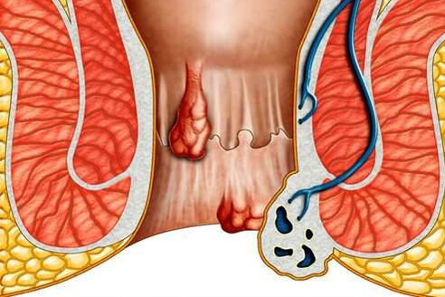
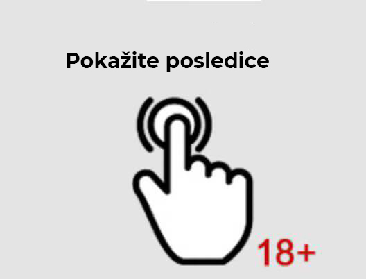
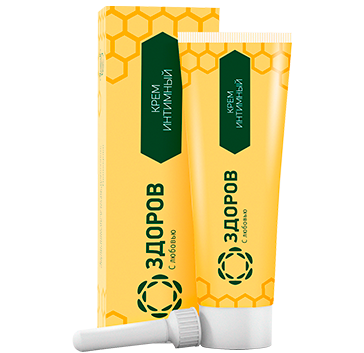
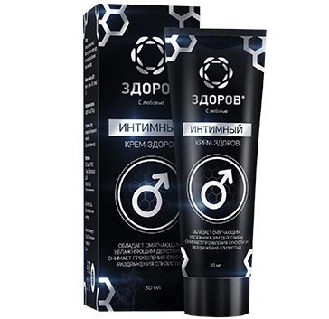

Profesor, punopravni član Međunarodnog udruženja hirurga. Njegovo radno iskustvo u proktologiji i vaskularnoj hirurgiji je preko 40 godina. Autor je preko 100 naučnih radova, 12 novih metoda lečenja u oblasti proktologije i vaskularne hirurgije. U svojoj svakodnevnoj medicinskoj praksi profesor koristi napredne izraelske tehnologije koje, bez krvi i ureza, spašavaju pacijenta od velikog problema.
Najefikasniji preparat protiv hemoroida u Srbiji koštaće vas mnogo više
Vodeći izraelski proktolog Mihail Šaferman posetio je Moskvu krajem novembra 2014. godine sa vestima koje su bukvalno razbile sve ustaljene ideje o lečenju hemoroida: u Jerusalimu je razvijen prirodni preparat za nehirurško lečenje hemoroida.
Pozadina
Više od 20 godina profesor Mihail Šaferman radio je na metodi nehirurškog lečenja hemoroida, učestvovao u desetinama studija o varikoznim venama i 2011. godine postigao je svoj cilj.
Pod vođstvom Šafermana, u Izraelu je predstavljena revolucionarna formula voštane antihemoroidne kreme kojoj nema slične na celom svetu. Ovo je zaista jedinstven preparat koji može u potpunosti izlečiti hemoroide za 28 dana, čak i u trećem, prekanceroznom stadijumu bolesti.
U pogledu efikasnosti, samo operacija se može uporediti sa njom, ali ako uzmemo u obzir odsustvo perioda rehabilitacije i brzinu procesa oporavka, krem-vosak pobeđuje u nekoliko parametara.
Prednosti lečenja hemoroida krem-voskom
Postoji puno prednosti u široj slici. Ključne prednosti koje su istakli srpskih lekara su da:
-
– nema kontraindikacija i nuspojava
krem-vosak je napravljen u potpunosti na prirodnoj osnovi, ne sadrži alergene, otrovne materije i hemijska jedinjenja. -
– efikasnost preko 94,7%
visoka efikasnost potvrđena je kliničkim studijama u kojima je učestvovalo više od 10.000 dobrovoljaca. -
– ne postoji period rehabilitacije
zbog 100% prirodnosti lekovite supstance, ne postoji period rehabilitacije tokom tretmana krem-voskom.
Kako radi
Krem-vosak ima inovativnu četvorokomponentnu strukturu kompozicije na matičnoj osnovi. Ovo garantuje trenutni efekat aktivne supstance na afektovane ćelije.
Ojačani su zidovi upaljenog područja, započinje aktivna regeneracija oštećenih područja krvnih sudova i vena. Poboljšava cirkulaciju krvi, ublažava svrab i bol u anusu.
Primena u Srbiji
Profesor Šaferman, šef više odeljenja proktologije u izraelskim klinikama, na eksperimentalnoj osnovi potpisao je sporazum sa srpskim naučnicima-proktolozima. Kao deo eksperimenta, predloženo je da se krem-vosak koristi u Srbiji po povlaštenim uslovima.
Prema ugovoru o prodaji krem-voska na teritoriji Republike Srbije, cena preparata ostaće fiksna tokom jedne godine. U Srbiji je preparat protiv hemoroida počeo da se proizvodi 2016. godine pod zaštitnim znakom ZDOROV.
 Prognoze
U prvih šest meseci prodaje u ZND-u, krem-vosak ZDOROV zauzeo je vodeću poziciju u lečenju neoperabilnih hemoroida. Do kraja 10. meseca svog postojanja u Srbiji, potražnja za preparatima premašila je procenjene cifre za 15 puta. Takva statistika dovodi do neizbežnog rasta cene proizvoda po isteku ugovora.
Kako koristiti, gde kupiti i kako sprečiti pojavu hemoroida u budućnosti, možete besplatno saznati na zvaničnom veb sajtu srpskog predstavnika krema za vosak ZDOROV uz podršku profesora Mihajla Šafermana.
Idite na zvanični sajt
Komentari: